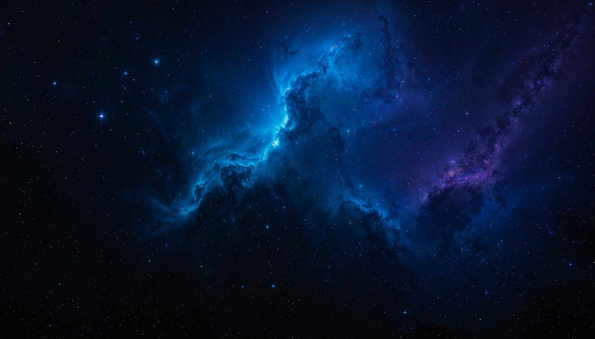
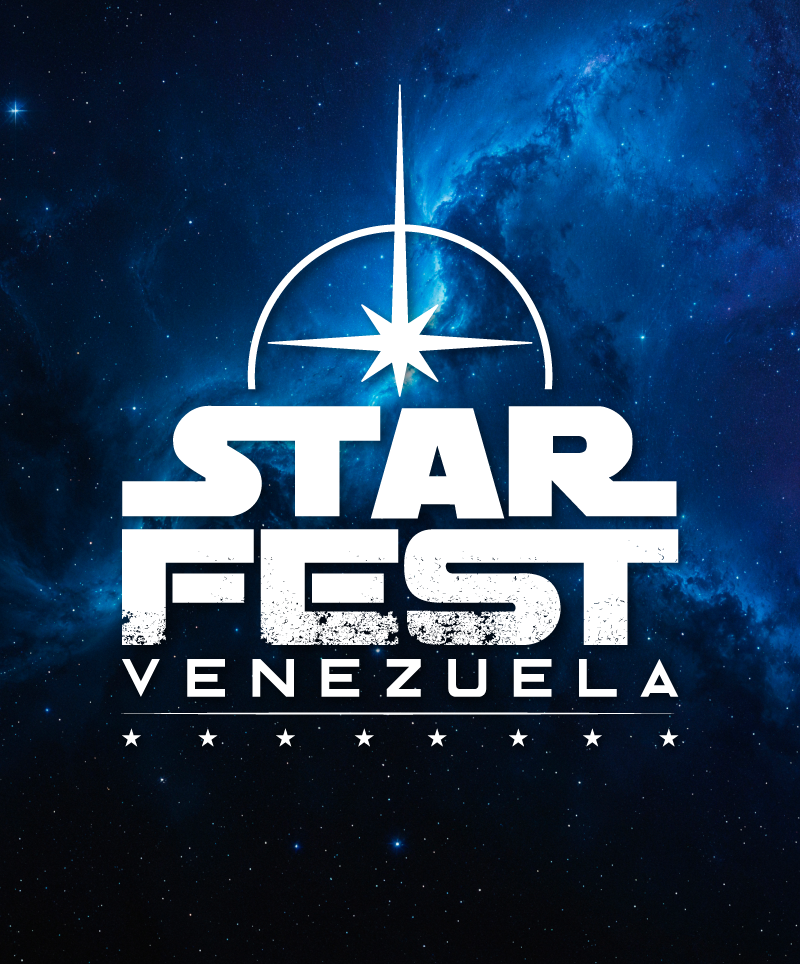

Fans y visitantes
Vive StarFest
Eventos, actividades, cosplay, horarios, ubicación y preguntas frecuentes.
Planifica tu visita →
Chile · Colombia · Venezuela
Una celebración creada por fans para vivir, compartir y llevar más lejos la cultura que nos une.
Cifras por confirmar en la versión definitiva.

La edición más reciente reunió a legiones, coleccionistas, artistas y familias en Caracas. La próxima edición ya está en preparación.
Descubre StarFest Venezuela →
Un capítulo vivo de la comunidad StarFest, con ediciones que han reunido a fans, cosplayers y coleccionistas colombianos.
Descubre StarFest Colombia →
Capítulo activo de StarFest Latinoamérica. Chile mantiene su presencia dentro de la organización regional mientras prepara sus próximos pasos.
Descubre StarFest Chile →Personajes que caminan entre el público, colecciones que se explican en persona, duelos, juegos, talleres y comunidades. En StarFest las cosas pasan a tu alrededor.
Desafíos, juegos interactivos y experiencias.
Legiones, cosplayers, artistas, coleccionistas y comunidades.
Figuras, props, modelos, réplicas y memorabilia.
Arte, dibujo, talleres y actividades.

Charlas, conversaciones y encuentros.

Cosplay, concursos, juegos y experiencias colectivas.
Entra, explora, conversa con los coleccionistas, tómate fotos con los personajes y vive el ambiente StarFest sin pagar entrada. Dentro del evento podrás elegir, si quieres, experiencias adicionales y coleccionables.
Eventos, actividades, cosplay, horarios, ubicación y preguntas frecuentes.
Planifica tu visita →Coleccionista: muestra figuras, props, modelos y memorabilia.
Expositor comercial: tiendas, artistas y emprendimientos con stands y mesas.
Patrocinio del evento, activaciones, presencia en escenario, contenido y publicaciones.
Oportunidades →
El equipo organizador ya trabaja en la sede, el programa y las nuevas zonas de experiencia.
Si tienes figuras, props, réplicas o memorabilia, queremos mostrarlas a un nuevo público.

Stands y mesas comerciales para tiendas, artistas y emprendimientos de la comunidad.
Crónicas, entrevistas y fotografía de las comunidades que hacen posible StarFest.
Cada edición puede dejar una pieza: créditos, pines, stickers, credenciales, afiches y publicaciones que prueban que estuviste allí.

Crónicas de cada edición, entrevistas con coleccionistas y artistas, y la fotografía de las personas que hacen StarFest.
Leer edición →